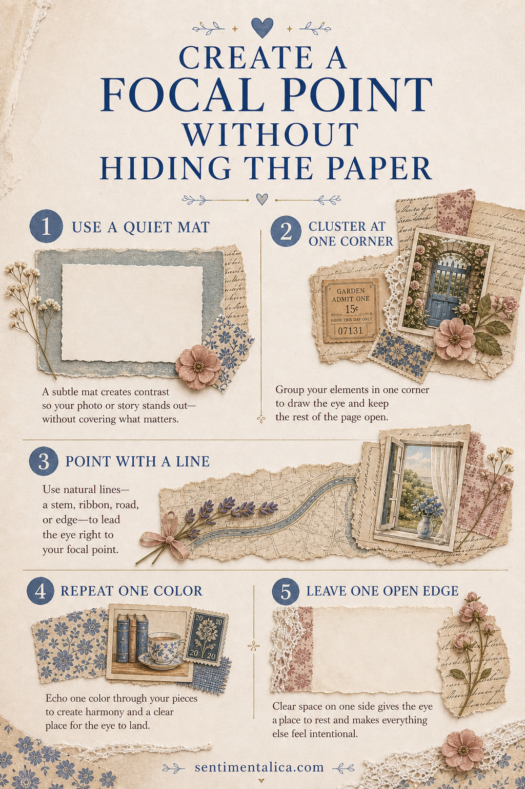
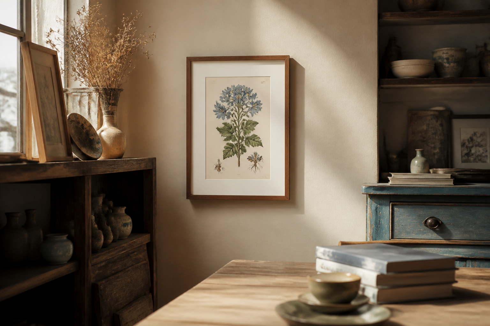

Beautiful paper should not disappear beneath the embellishments. The best focal points give the eye one clear place to land while allowing the paper's color, texture, and marks to remain part of the story.

Choose the quietest landing place
Before cutting anything, move your focal image around the page. Look for an area with less contrast or fewer important details. A portrait can overlap a faint wash, but it should not cover the flower, handwriting, or architectural feature that made you choose the paper.
If every area is busy, add a small torn piece of vellum or plain book paper. This creates a calm landing place without becoming a large opaque mat.
Use a three-part cluster
Start with one main image, one supporting scrap, and one tiny accent. The supporting scrap should extend beyond the focal image on only two sides. Let the accent—thread, a label, a leaf, or a narrow strip—point inward. This produces direction without building a heavy frame.

Keep an escape route for the pattern
Leave at least one uninterrupted path where the background can travel from the page edge toward the center. That visible route makes the paper feel intentional rather than merely covered. It can be a band of pattern along one side, a diagonal sweep of color, or a quiet corner.
Repeat one background color inside the cluster. A rust thread beside a rust printed flower, for example, connects the focal point to the paper while preserving the original design.
Test before gluing
Take a quick phone photograph, then look at the thumbnail. The focal point should read immediately, while the background still contributes mood. Remove the smallest unnecessary piece first. A successful cluster rarely needs more decoration; it needs a clearer hierarchy.